Projects
If a project is not publicly available, you can send me a message from the "Contact" page, and I will get back to you.
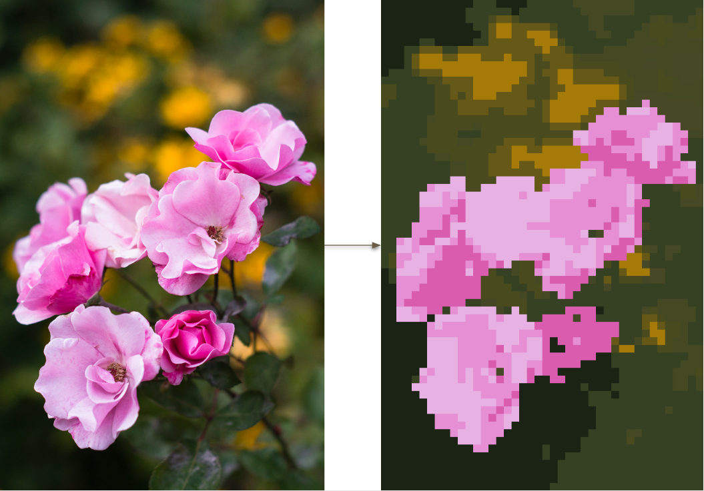
Pixelization ProgramWritten in C++A program that accepts images of any resolution and outputs the same image in the art style of pixel art, with a specified output resolution and limited palette. This is accomplished using an interleaved combination of the SLIC superpixel algorithm and the Mass Constrained Deterministic Annealing algorithm. |
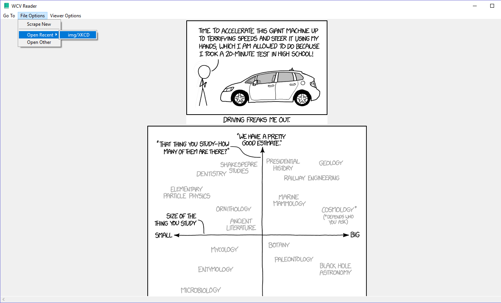
Web Comic ReaderWritten in PythonAn application that takes a folder of webcomic pages and displays them in a viewer. Also has scraping capabilities for offline viewing. |
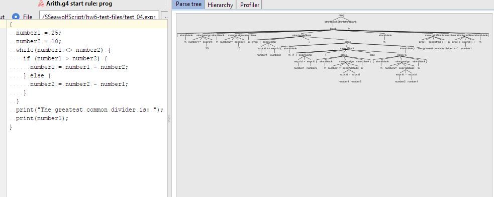
SSeawolf ScriptWritten in ANTLR4, PythonProgram written to interpret and compile a programming language known as SSeawolf Script. |
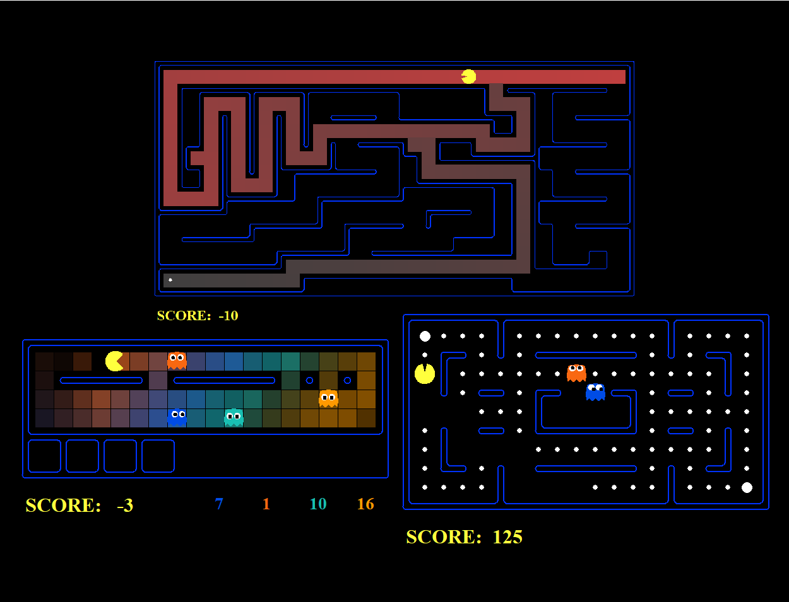
Pac-Man SearchersWritten in PythonAutomated Pac-Man programs that allow Pac-Man to chase ghosts and eat pellets by following various AI techniques including but not limited to Bayes' Nets, adversarial searches, and graph based searches. |
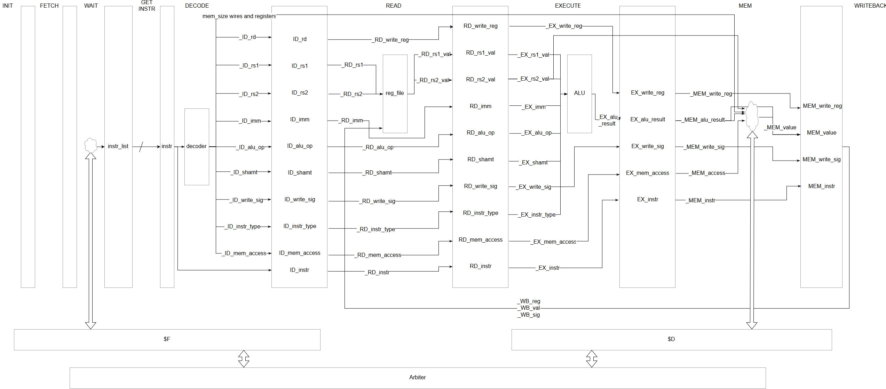
Computer Processing UnitWritten in SystemVerilogA processor in a HDL with 5+ stage pipelining, direct and set associated caches, branch prediction abilities, and is capable of running simple assembly programs. |
.png)
I-ProgrammingWritten in Java, HTML, CSS, Javascript, and SQL, using Bootstrap, Maven, and Spring MVCA web application designed to teach users how to program, where they can also create and share courses. |
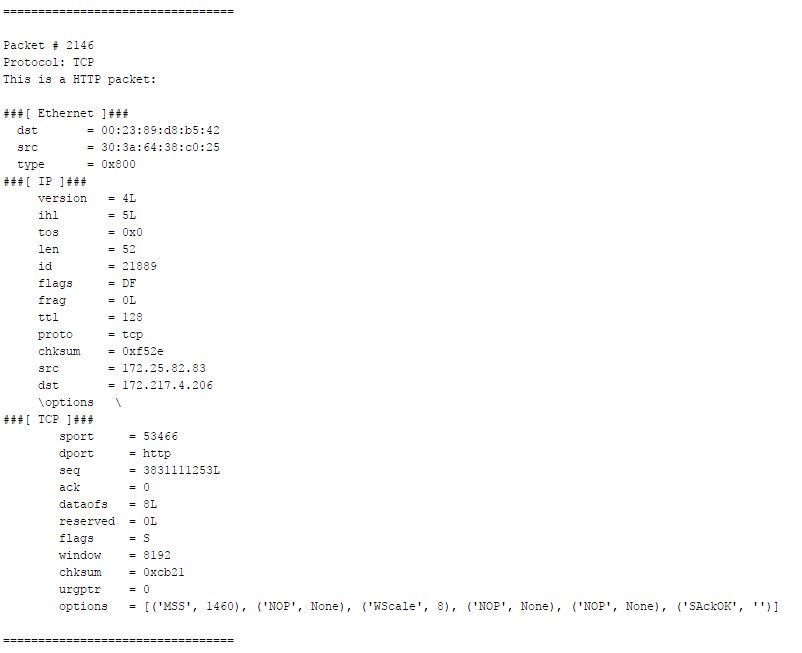
Packet SnifferWritten in PythonThis program captures network traffic, parses it to determine the packet format, and displays it back in a user-friendly format. It is also capable of searching the captured packets using regular expressions, filtering out types of packets, and reconstructing DNS queries. |
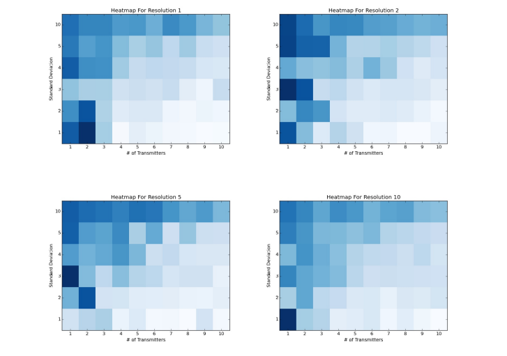
Localization Using Radio FingerprintsWritten in PythonAn application that is capable of determining the approximate location of a variable number of radio towers in a grid given the fingerprint vectors of each cell in the grid using a Gaussian Naive Bayes-based algorithm. |
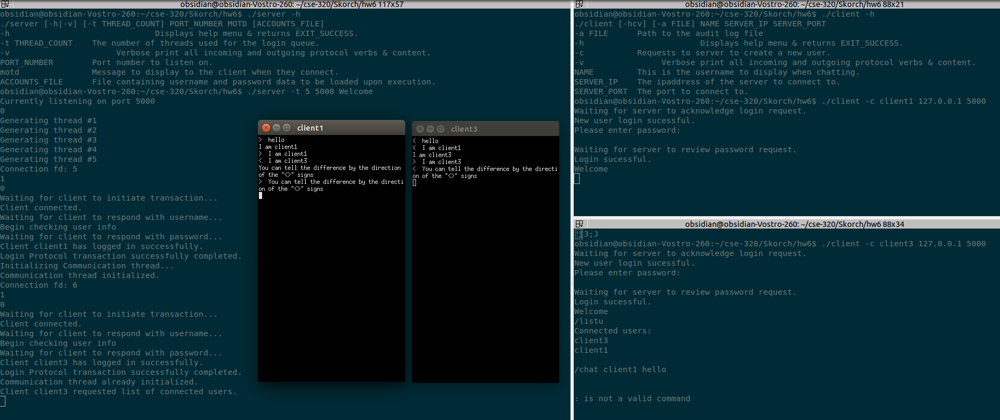
Web Messenger AppWritten in C, SQLiteThis consists of both a client and server program, and allows two users to send messages to one another in real-time. Users login with a username and password, stored using a SQLite database on the server, and can then send messages to any other user currently online. |
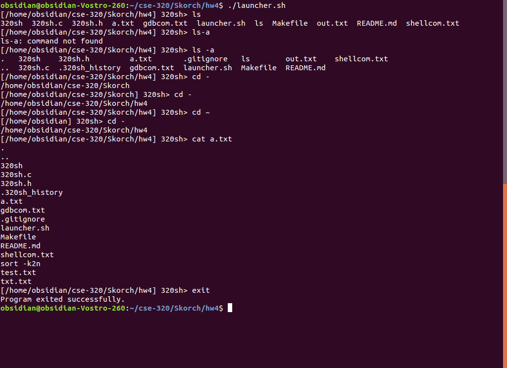
Shell ProgramWritten in CA shell program that is written to mimic the Bash program in UNIX operating systems. |
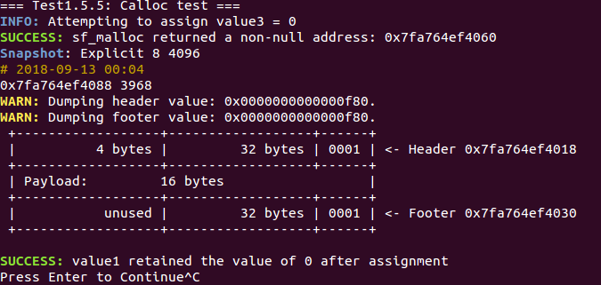
Memory AllocatorWritten in CA dynamic memory allocator written from scratch to manage a given chunk of memory. This allocator uses an explicit freelist to manage allocations, and supports both first and next block placement. |
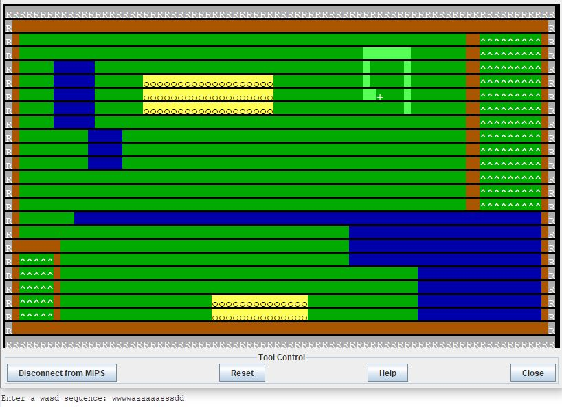
Lawn Mower GameWritten in MIPS AssemblyThis is an interactive game in where the user attempts to mow a lawn. |
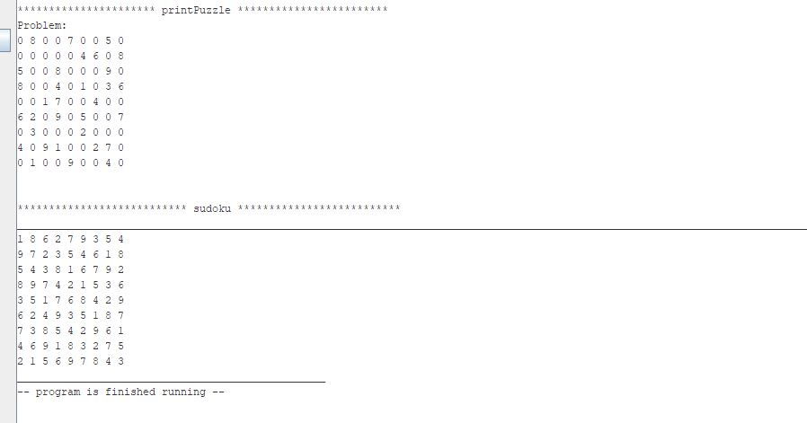
Sudoku SolverWritten in MIPS AssemblyRecursively solves a sudoku puzzle, provided as a string input. |
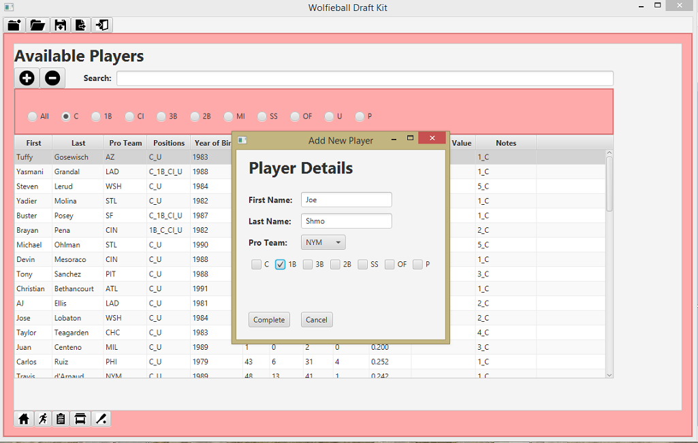
WolfieBall Draft Kit ManagerWritten in Java, JavaFXA fantasy baseball team manager. |
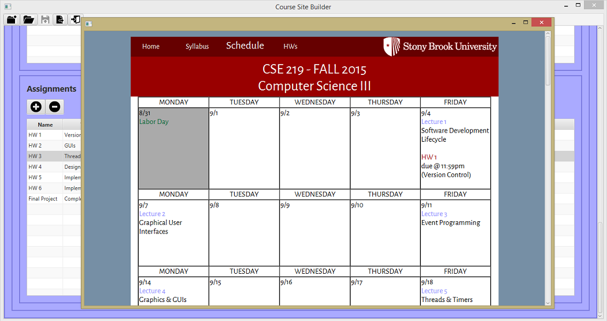
Course Site BuilderWritten in Java, JavaFXA program to automate the process of recreating a course webpage. |